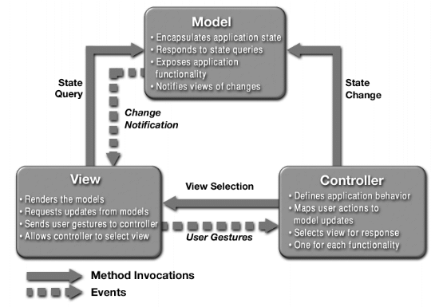
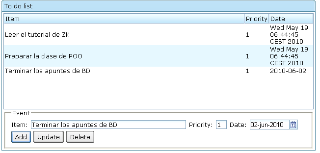

Sesión 7: El patrón MVC
Breve descripción del patrón modelo-vista-controlador
El patrón modelo-vista-controlador es un patrón muy usado para el diseño de la arquitectura de aplicaciones con interfaces de usuario. El objetivo del patrón es definir una separación clara entre los datos que se muestran en la aplicación (el modelo) y la representación visual de los mismos (la vista). El controlador es el encargado de mantener la vista y el modelo sincronizados y de procesar los eventos generados por la interfaz de usuario y cambiar la vista de forma adecuada.
Por ejemplo, supongamos que tenemos una aplicación que gestiona una lista de clientes. El modelo será el conjunto de clases que nos permiten representar la lógica de negocio de la aplicación. Tenemos Personas, Grupos, Direcciones de correo, Numeros de teléfono, etc. Todos estas clases tienen sus propias funciones que deben ser independientes del aspecto final de la aplicación, de si estamos realizando una aplicación para un teléfono móvil o para un escritorio. Por ejemplo, tendremos métodos cómo:
- Dame la foto y el e-mail del cliente XXX
- Dame los identificadores de los clientes que no han realizado ninguna compra en el último año
- Añade un cliente nuevo
- Cambia el teléfono del cliente XXX
Estas funciones son independientes del aspecto de la aplicación. Constituyen la "lógica de negocio" que la sustenta. En el mundo Java estas funciones se define con clases que agrupan la información y los métodos.
El modelo a su vez suele estar dividido en dos capas:
- Lógica de negocio: funciones que contienen la información de las reglas de funcionamiento de la aplicación (por ejemplo, qué hacer cuando un cliente hace una reclamación)
- Capa de datos: capa que gestiona la persistencia de los datos en una base de datos
La separación entre la vista y el modelo permite localizar y aislar distintas responsabilidades en el diseño y desarrollo de la aplicación. Una aplicación no está bien diseñada si características específicas de la vista se codifican en el modelo, o si decisiones y cálculos del modelo se realizan en la vista. La separación entre estas tres capas permite independizar el desarrollo, el test y el mantenimiento. Por ejemplo, un cambio en la vista (cambiar un grid por un listbox, o un menú desplegable por una barra de botones) no debe afectar al modelo.
Otra ventaja de separar las responsabilidades es poder reutilizar los distintos módulos de la aplicación. Separando el modelo del controlador y de las vistas permitimos que otras aplicaciones lo utilicen con otras vistas y otros controladores.
Un ejercicio muy recomendable es pensar en cómo sería la aplicación que estamos desarrollando con una interfaz de usuario completamente distinta, por ejemplo, una interfaz de línea de comando o de un teléfono móvil. En cada caso sólo debería de cambiar la vista, el modelo debería ser común a las distintas vistas. Cada vista adaptaría la respuesta proporcionada por el modelo a sus particularidades.
Por ejemplo, supongamos una aplicación en la que hay que realizar un listado de ventas de artículos y marcar en rojo aquellos artículos cuyas ventas se han incrementado en un 10 por cierto en el último mes. ¿Qué pondríamos en el modelo y en la vista? La solución de Martin Fowler, en su libro Patterns of Enterprise Application Architecture es definir en el modelo una función que determina si un artículo ha mejorado las ventas. Esta función consulta las ventas del artículo en los dos últimos meses y devuelve un valor booleano. La vista llama a esta función y pinta en rojo el artículo si se devuelve true. De esta forma, el proceso se divide en dos partes: decidir si algo tiene que ser marcado y decir cómo marcarlo.
Entre las características de cada una de las partes se encuentran las siguientes:
-
Modelo:
- Encapsula el estado de la aplicación
- Responde a preguntas sobre el estado
- Expone las funcionalidades de la aplicación
- Notifica a la vista de cambios sucedidos en el estado
-
Vista:
- Muestra el estado
- Solicita actualizaciones desde el modelo
- Captura los eventos del usuario y los manda al controlador cuando es necesario
- Permite al controlador modificar la vista
-
Controlador:
- Define la conducta de la aplicación, transformando los eventos recibidos desde la vista en cambios de estado del modelo
- Selecciona la vista a mostrar, normalmente una vista por cada funcionalidad
En la siguiente figura se muestran las responsabilidades de cada una de las partes, así como la forma de comunicación entre ellas. Las flechas continuas representan invocación síncrona de métodos. La parte que realiza la llamada se queda a la espera de que la otra parte realice el procesamiento y devuelva un resultado. Las líneas discontinuas representan eventos. En este caso, la parte que lanza el evento lo hace de forma asíncrona y no espera ninguna respuesta ni, por tanto, modifica su estado ni su comportamiento en función de ésta.

Un ejemplo de aplicación del patrón en una aplicación web Java:
- Modelo: clases Java y objetos Java beans
- Vista: páginas JSP
- Controlador: servlets
En el caso de ZK, la separación entre vista, modelo y controlador no es obligatoria en la arquitectura. El framework está basado en las páginas ZUL que son procesadas por el motor ZK. Esto permite múltiples opciones, como incluir el controlador en las propias páginas e incluir también en ellas el código Java que gestiona el modelo. Como el framework no obliga a realizar una separación estricta entre las capas, deberemos imponer nosotros mismos esta arquitectura en el diseño de nuestras aplicaciones.
Para aplicar el patrón a ZK deberíamos separar el código al menos en dos grupos de ficheros:
- Clases Java en las que se gestiona el modelo de la aplicación
- Ficheros ZUL en donde se implementan las vistas y el controlador
Esta estructura definiría un modelo "MV+C", en el que la vista y el controlador se encuentran en los mismos ficheros.
Si queremos ir más allá para, por ejemplo, poder reutilizar en distintos componentes el código del controlador, es recomendable separar a su vez la vista y el controlador. De esta forma tendríamos:
- Modelo: Clases Java
- Vista: Ficheros .zul
- Parte del controlador: Clases Java que manejan los eventos de la vista
Además de esta separación de ficheros, es importante lo que se hace en el código. Por ejemplo, una recomendación muy importante es que el controlador no debe cambiar los datos de la vista para dejarla sincronizada con el modelo (como se hacía en los primeros ejemplos de datos dinámicos en listas). Hay que utilizar las características de data binding de ZK para ello. El controlador debe modificar el modelo y el data binding se debe encargar de pintar el cambio en la vista.
Ejecutando código Java
ZUML y Java
Como hemos visto, la forma de diseñar la interfaz de usuario en ZK es mediante un fichero XML en el que se define el árbol de componentes. Se trata de una forma declarativa, frente a otro tipo de enfoques como el de GWT o Swing en los que la interfaz se construye ejecutando un programa Java. En los enfoques declarativos (también usado por JavaFX, por ejemplo) la interfaz se especifica en un lenguaje XML y el módulo runtime del lenguaje interpreta esa definición y la construye.
De esta forma queda muy claro que el código de scripting y el código Java se va a utilizar en su mayor parte para gestionar los eventos producidos en la interfaz. Cuando ocurre un evento en la IU, ZK notifica automáticamente al servidor que lanza el correspondiente gestor del evento (escrito en Java o en el lenguaje de script). Ese código se ejecuta completamente en el servidor, pudiendo acceder a otras librerías o frameworks o acceder a bases de datos, por ejemplo.
En la mayoría de ocasiones ZUML se utiliza para componer la disposición (layout) de la IU y Java se encarga de todo lo demás. Realmente, como ya hemos comentado, es posible escribir código Java en ZUML en forma de zscript. Incluso se podría escribir todo en ZUML, o todo usando Java. Sin embargo, no es una buena práctica definir toda la interfaz de usuario en zscript. Esto genera código poco reusable y difícil de mantener. En el otro extremo, es tedioso usar sólo Java para construir uno a uno los componentes y enlazarlos formando un árbol para componer la IU.
Se pueden usar las clases Java en los programas ZK para las siguientes tareas.
Manejo de eventos: para manejar los eventos es posible utilizar zscript en ZUML para hacer el prototipado de la interfaz. O, como hemos visto, podemos escribir clases Java que se asocian a los componentes mediante los atributos use y apply. En la clase se definen métodos cuyos nombres coinciden con el nombre del evento que se trata. Hemos visto ya un ejemplo de esto.
Fichero ZUML:
<window id="win" title="MVC" apply="MyComposer"> <button label="Di hola" forward="onDiHola" /> </window>
Fichero MyComposer.java
//MyComposer.java
import org.zkoss.zk.ui.event.Event;
import org.zkoss.zk.ui.util.GenericComposer;
import org.zkoss.zul.Label;
public class MyComposer extends GenericComposer {
public void onSayHello(Event evt) {
evt.getTarget().appendChild(new Label("Hello"));
}
}
Modificar la IU al vuelo. En el ejemplo anterior, se añade un nuevo componente hijo a la interfaz utilizando el método appendChild del componente. En este caso, el componente receptor del evento es la ventana (la instrucción forward reenvía el evento al componente padre), que se obtiene del parámetro del manejador del evento con el método getTarget().
Conectarse con otras capas y librerías. Todo el código Java, ya sea en zscript o en clases Java, se ejecuta en el servidor. Por eso, es posible utilizar cualquier librería Java. La parte del cliente en el navegador sólo obtiene el contenido HTML y el motor ZK del cliente escrito en JavaScript.
Use
El atributo use define una clase Java que es utilizada como controlador del elemento. Por defecto, cada componente ZK tiene una clase Java asociada. Hemos visto que el árbol de componentes que forma la interfaz de usuario está mapeado en el servidor por un árbol de objetos Java instancias de las clases de los componentes. Mediante el atributo use podemos mapear el componente en una clase definida por el desarrollador que especializa la clase por defecto.
Por ejemplo, un componente ventana (window) se mapea en una instancia de la clase org.zkoss.zul.Window. Podemos sobreescribir esta clase con la siguiente declaración:
<window use="MyWindow"> ... </window>
Y podemos definir la clase MyWindow como una clase que especializa la original:
import org.zkoss.zul.Window;
public class MyWindow extends Window {
public void onCreate(){
this.setTitle("mi ventana");
}
}
Podemos sobreescribir los métodos que queramos modificar. En el ejemplo, modificamos el método onCreate() llamado justo después de crear el componente. Podemos también escribir manejadores de eventos en la clase.
En el ejemplo anterior, combinando el atributo use y el atributo each podemos hacer que la definición de los objetos iniciales se haga en un fichero Java.
Por ejemplo, declaramos la clase Java MyWindow como la clase componente de la ventana, y después accedemos con la expresión EL ${win_1.strings} al método getStrings() del componente (utilizamos el identificador que hemos definido para el componente) y asignamos la colección resultante a la variable forEach para realizar la iteración por todas las cadenas.
<window id="win_1" use="MyWindow">
<listbox>
<listitem label="${each}" forEach="${win_1.strings}"/>
</listbox>
</window>
La definición de MyWindow es como sigue:
import org.zkoss.zul.Window;
public class MyWindow extends Window {
String[] contacts = new String[] {"Lunes", "Martes", "Miércoles"};
public String[] getContacts(){
return contacts;
}
}
Además de usar métodos getters, podemos también invocar métodos específicos de la clase que especializa el componente. Por ejemplo, en el siguiente ejemplo se llama al método onTest() cuando se pulsa un botón. Dentro de ese método se utiliza appendChild para añadir listItems al listbox. Para que funcione correctamente tenemos que poner el identificador lb_1 en el listbox. El método getFellow se ejecuta sobre el propio objeto win_1 y devuelve el componente denominado lb_1 en el espacio de identificadores (ID space) de la ventana. Es la forma de acceder al listbox.
import org.zkoss.zul.Listbox;
import org.zkoss.zul.Listitem;
import org.zkoss.zul.Window;
public class MyWindow extends Window {
String[] contacts = new String[] { "Monday", "Tuesday", "Wednesday" };
public void onTest() {
Listbox lb = (Listbox) getFellow("lb_1");
for (int i = 0; i < contacts.length; i++) {
Listitem li = new Listitem();
li.setLabel(contacts[i]);
lb.appendChild(li);
}
}
}
El atributo apply
El otro atributo ZK relacionado con las clases Java es apply. Su sintaxis es similar a use, con la diferencia de que permite especificar una o más clases:
apply="a-class-name"
apply="class1, class2,..."
apply="${EL_returns_a_class_or_a_collection_of_classes}"
apply="${EL_returns_an_instance_or_a_collection_of_Composer_instances}"
Especifica una colección de clases que se utilizan para inicializar el componente y gestionar sus eventos. Estas clases deben implementar la interfaz org.zkoss.zk.util.Composer. La forma de inicializar el componente es reescribiendo el método doAfterCompose, que es llamado después de que el comonente y sus hijos hayan sido inicializados. Se puede llamar al método addEventListener dentro de este método para registrar un menejador de eventos.
Un ejemplo:
<window apply="MyController"> <button id="btn_1" label="test" forward="onClick=onTest" /> </window>
import org.zkoss.zk.ui.Component;
import org.zkoss.zk.ui.event.Event;
import org.zkoss.zk.ui.event.EventListener;
import org.zkoss.zk.ui.util.Composer;
import org.zkoss.zul.Button;
public class MyController implements Composer {
private Button btn;
public void doAfterCompose(Component win) throws Exception {
btn = (Button) win.getFellow("btn_1");
// define and register event listeners
win.addEventListener("onTest", new EventListener() {
public void onEvent(Event event) throws Exception {
btn.setLabel("event handled");
}
});
}
}
Una última forma de conectar el evento y la clase Java (sin usar forward) es utilizando las convenciones de los nombres de ZK. Es lo que en ZK se denomina autowired. En este caso, el método que inicializa el componente debe extender la clase GenericForwardComposer:
<window apply="MyController"> <button id="btn_1" label="test"/> </window>
import org.zkoss.zk.ui.event.Event;
import org.zkoss.zk.ui.util.GenericForwardComposer;
import org.zkoss.zul.Button;
//Must extend from GenericForwardComposer to omit forward.
public class MyController extends GenericForwardComposer {
private Button btn_1;
//onClick event from btn_1 component
public void onClick$btn_1(Event event) {
btn_1.setLabel("event handled");
}
}
Vemos que como nombre de función se utiliza el nombre del evento (onClick) y el nombre del componente dentro de la ventana que lo va a manejar (btn_1). Incluso dentro de la función que maneja el evento se utiliza este nombre para acceder a una propiedad del botón. Automáticamente, ZK instancia la variable btn_1 con el botón que tiene ese identificador dentro del espacio de identificadores de la ventana.
Ejemplo de controlador
La forma más recomendable de implementar los controladores en ZK es utilizando el atributo apply para definir la clase Java que gestiona los eventos de un determinado componente y que modifica la interfaz (vista) en respuesta a ellos. Vamos a ver un ejemplo.
En el fichero di-hola.zul se definen los componentes ZK. El atributo apply de la ventana indica la clase Java que va a gestionar los eventos que se lancen sobre la ventana. El atributo forward del botón hace los eventos del botón sean redirigidos al componente padre (la ventana en este caso).
<?page title="Controller" contentType="text/html;charset=UTF-8"?>
<zk>
<zscript>
Date now = new Date();
</zscript>
<window id="win_1" title="Ventana1" border="normal" apply="controller.MiControlador">
<button label="Cambia título" forward="onCambiaTitulo" />
<button label="Di fecha" forward="onDiFecha(${now})"/>
<button label="Di hola" forward="onDiHola"/>
</window>
</zk>
En la clase Java controller.MiControlador se define un método público onDiHola con un parámetro de tipo Event en el que se recoge la información del evento. En este caso, se añade un componente hijo de tipo Label a la ventana que ha recibido el evento.
package controller;
import java.text.DateFormat;
import java.text.SimpleDateFormat;
import java.util.Date;
import java.util.Locale;
import org.zkoss.zk.ui.util.GenericComposer;
import org.zkoss.zk.ui.event.Event;
import org.zkoss.zul.Label;
import org.zkoss.zul.Window;
import org.zkoss.zk.ui.Path;
public class MiControlador extends GenericComposer {
private static final long serialVersionUID = 1L;
String tituloAntiguo = null;
public void onDiHola(Event evt) {
evt.getTarget().appendChild(new Label("Hola"));
String a="1";
for(int i = 0; i<0; i++) {
a=a+"1";
}
}
public void onDiFecha(Event evt) {
Date fecha = (Date) evt.getData();
Locale locale = new Locale("es");
DateFormat formatter = new SimpleDateFormat("EEEE, d 'de' MMMM 'de' yyyy", locale);
String strFecha = formatter.format(fecha);
evt.getTarget().appendChild(new Label(strFecha));
}
public void onCambiaTitulo(Event evt) {
Window win = (Window) Path.getComponent("/win_1");
if (tituloAntiguo == null)
tituloAntiguo = win.getTitle();
if (win.getTitle().equals("Título de Java"))
win.setTitle(tituloAntiguo);
else win.setTitle("Título de Java");
}
}
Un controlador completo
La clase GenericForwardComposer proporciona utilizades para hacer que nuestro controlador sea mucho más sencillo. Para ello utiliza una serie de convenciones de código que permiten no tener que localizar los componentes explícitamente (utilizando métodos como getFellow o clases como Path), ni tener que registrar los eventos, ni tener que utilizar el atributo forward en la vista.
Veámoslo con un ejemplo ya conocido: dos campos en los que definimos nombre y unos apellidos. El fichero ZUL se define como sigue:
<?page title="Nombre" contentType="text/html;charset=UTF-8"?>
<window title="composer1 example" border="normal" width="300px" apply="controller.NombreComposer">
<grid>
<rows>
<row>First Name: <textbox id="firstName"/></row>
<row>Last Name: <textbox id="lastName"/></row>
<row>Full Name: <label id="fullName"/></row>
</rows>
</grid>
</window>
Y la clase controller.NombreComposer:
package controller;
import org.zkoss.zk.ui.event.InputEvent;
import org.zkoss.zk.ui.util.GenericForwardComposer;
import org.zkoss.zul.Textbox;
import org.zkoss.zul.Label;
public class NombreComposer extends GenericForwardComposer {
private static final long serialVersionUID = 1L;
private Textbox firstName;
private Textbox lastName;
private Label fullName;
public void doAfterCompose(Component comp) throws Exception {
super.doAfterCompose(comp);
Window win = (Window) comp;
win.setTitle("Título del controller");
win.doOverlapped();
}
//onChange event from firstName component
public void onChanging$firstName(InputEvent event) {
fullName.setValue(event.getValue() +" "+lastName.getValue());
}
//onChange event from lastName component
public void onChanging$lastName(InputEvent event) {
fullName.setValue(firstName.getValue()+" "+event.getValue());
}
}
ToDo: un gestor de tareas pendientes
Vamos a ver un ejemplo de una aplicación un poco más complicada de las que hemos visto hasta ahora. Vamos a definir una gestor de tareas pendientes con el que podamos añadir, borrar y modificar tareas de una lista.
Cuando esté terminada, el aspecto de la aplicación será el siguiente:

Vamos a ir construyendo la aplicación de forma iterativa, asegurándonos de que funciona correctamente después de cada nuevo cambio.
El modelo de dominio
package model;
import java.util.Date;
public class ToDoEvent {
private int id = 0;
private String name;
private int priority;
private Date date;
public ToDoEvent() {
}
public ToDoEvent(int id, String name, int priority, Date date) {
this.id = id;
this.name = name;
this.priority = priority;
this.date = date;
}
public int getId() {
return this.id;
}
public void setId(int id) {
this.id = id;
}
public String getName() {
return name;
}
public void setName(String name) {
this.name = name;
}
public int getPriority() {
return priority;
}
public void setPriority(int priority) {
this.priority = priority;
}
public Date getDate() {
return date;
}
public void setDate(Date date) {
this.date = date;
}
// copia (clonado) de un customer
public ToDoEvent copy() {
ToDoEvent copy = new ToDoEvent();
copy.setId(this.getId());
copy.setName(this.getName());
copy.setDate(this.getDate());
copy.setPriority(this.getPriority());
return copy;
}
}
La capa de datos
package model;
import java.util.ArrayList;
import java.util.Iterator;
import java.util.List;
import model.ToDoEvent;
public class EventDao {
MyEventsSingleton model;
public EventDao() {
model = MyEventsSingleton.getInstance();
}
public List<ToDoEvent> findAll() {
ArrayList<ToDoEvent> allEvents = new ArrayList<ToDoEvent>();
for (Iterator<ToDoEvent> iterator = model.getEvents()
.iterator(); iterator.hasNext();) {
ToDoEvent event = (ToDoEvent) iterator.next();
allEvents.add(event.copy());
}
return allEvents;
}
private ToDoEvent find(int id) {
List<ToDoEvent> events = model.getEvents();
ToDoEvent foundEvent = null;
for (ToDoEvent event : events)
if (event.getId() == id)
foundEvent = event;
return foundEvent;
}
public boolean delete(int id) {
boolean deleted = false;
ToDoEvent event = find(id);
if (event != null) {
model.getEvents().remove(event);
deleted = true;
}
return deleted;
}
public boolean insert(ToDoEvent evt) {
boolean inserted = false;
List<ToDoEvent> events = model.getEvents();
if (find(evt.getId()) == null) {
ToDoEvent event = evt.copy();
int id = model.getLastEventId() + 1;
event.setId(id);
model.setLastEventId(id);
events.add(event);
inserted = true;
}
return inserted;
}
public boolean update(ToDoEvent evt) {
boolean updated = false;
ToDoEvent event = find(evt.getId());
if (event != null) {
event.setName(evt.getName());
event.setDate(evt.getDate());
event.setPriority(evt.getPriority());
updated = true;
}
return updated;
}
}
Un singleton que simula la BD
package model;
import java.util.ArrayList;
import java.util.Date;
import java.util.List;
public class MyEventsSingleton {
private static MyEventsSingleton instance = null;
List<ToDoEvent> events;
int lastEventId;
public static MyEventsSingleton getInstance() {
if (instance == null) {
instance = new MyEventsSingleton();
ArrayList<ToDoEvent> events = new ArrayList<ToDoEvent>();
events.add(new ToDoEvent(1, "Leer el tutorial de ZK",
1, new Date()));
events.add(new ToDoEvent(2, "Preparar la clase de POO",
1, new Date()));
instance.setMyEvents(events);
instance.setLastEventId(2);
}
return instance;
}
public void setMyEvents(List<ToDoEvent> events) {
this.events = events;
}
public List<ToDoEvent> getEvents() {
return this.events;
}
public int getLastEventId() {
return lastEventId;
}
public void setLastEventId(int lastEventId) {
this.lastEventId = lastEventId;
}
}
El controlador
Comenzamos con un controlador casi vacío, que define un método getAllEvents que devuelve la lista de todas las tareas:
package controller;
import java.util.List;
import model.EventDao;
import model.ToDoEvent;
import org.zkoss.zk.ui.util.GenericForwardComposer;
public class EventController extends GenericForwardComposer {
private static final long serialVersionUID = 1L;
EventDao evtdao = new EventDao();
public List<ToDoEvent> getAllEvents() {
return evtdao.findAll();
}
public void addEvent() {}
public void updateEvent() {}
public void deleteEvent() {}
}
La vista
Creamos la página principal de la aplicación. Definimos el controlador del componente window y el modelo de la lista utilizando data binding.
Con la expresión @{win$composer.allEvents} utilizamos como modelo la colección devuelta por el método getAllEvents del controlador. La variable composer es una variable implícita que permite acceder al objeto controlador de la ventana.
<?page title="Auto Generated index.zul"?>
<?init class="org.zkoss.zkplus.databind.AnnotateDataBinderInit"?>
<window id="win" title="To do list" width="640px" border="normal"
apply="controller.EventController">
<listbox id="box" multiple="true" rows="5" model="@{win$composer.allEvents}">
<listhead>
<listheader label="Item" />
<listheader label="Priority" width="50px" />
<listheader label="Date" width="90px" />
</listhead>
<listitem self="@{each='event'}" value="@{event}">
<listcell label="@{event.name}" />
<listcell label="@{event.priority}" />
<listcell label="@{event.date}" />
</listitem>
</listbox>
</window>
Seleccionando una tarea
Definimos en el controlador la variable current en la que guardaremos la tarea seleccionada:
public class EventController extends GenericForwardComposer {
....
ToDoEvent current = new ToDoEvent();
public ToDoEvent getCurrent() {
return current;
}
public void setCurrent(ToDoEvent current) {
this.current = current;
}
....
}
Modificamos la vista para relacionar mediante data binding el elemento seleccionado de la lista con la variable current:
<listbox id="box" multiple="true" rows="5" model="@{win$composer.allEvents}"
selectedItem="@{win$composer.current}">
....
<groupbox>
<caption label="Event" />
Item: <textbox id="name" cols="25" value="@{win$composer.current.name}" />
Priority: <intbox id="priority" cols="1" value="@{win$composer.current.priority}" />
Date: <datebox id="date" cols="8" value="@{win$composer.current.date}" />
</groupbox>
Actualización del modelo
Modificamos el controlador para añadir los manejadores de los eventos que van a añadir, borrar y modificar las tareas. Estos eventos estará generados por botones distintos.
...
private Listbox box;
...
public void onClick$add(Event event) {
// insert into database
ToDoEvent newEvt = new ToDoEvent(0,current.getName(),
current.getPriority(),
current.getDate());
evtdao.insert(newEvt);
}
public void onClick$update(Event event) {
if (box.getSelectedItem() != null) {
// update database
evtdao.update((ToDoEvent) box.getSelectedItem().getValue());
}
}
public void onClick$delete(Event event) {
if (box.getSelectedItem() != null) {
ToDoEvent todo = (ToDoEvent) box.getSelectedItem().getValue();
evtdao.delete(todo.getId());
}
}
...
Añadimos los botones que generan los eventos:
<button id="add" label="Add" width="36px" height="24px" /> <button id="update" label="Update" width="46px" height="24px" /> <button id="delete" label="Delete" width="46px" height="24px" />
Y, por último, hacemos que se actualice la vista tras estos eventos utilizando la etiqueta load-after del data binding:
model="@{win$composer.allEvents, load-after='add.onClick, delete.onClick, update.onClick'}"